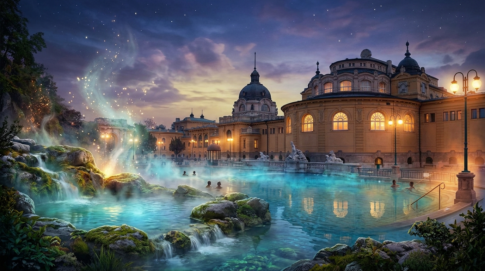
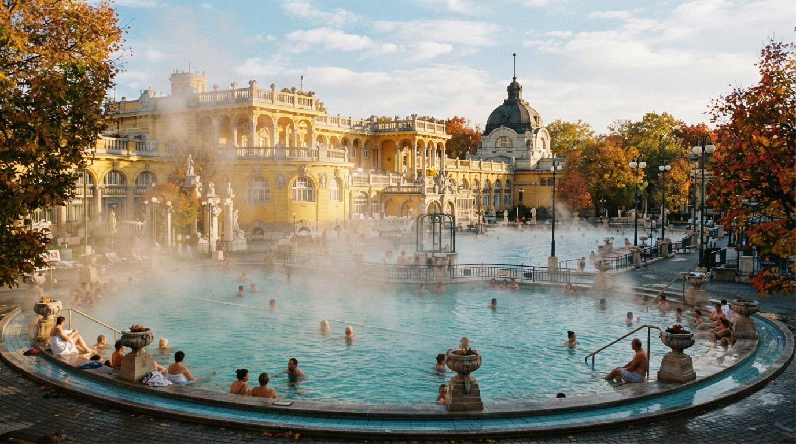
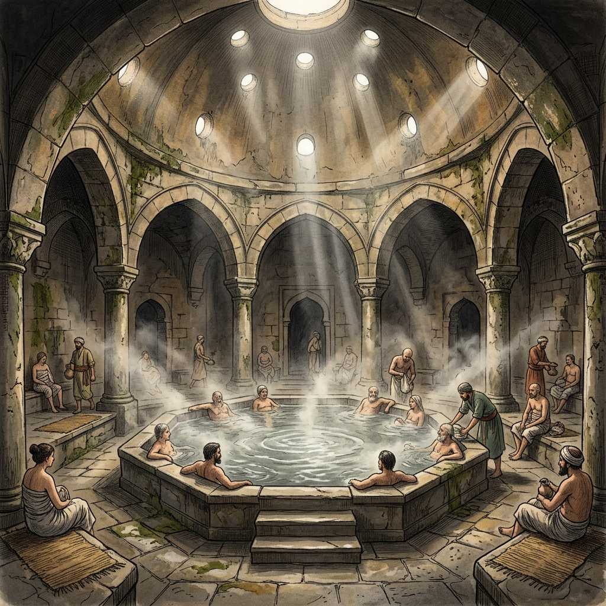
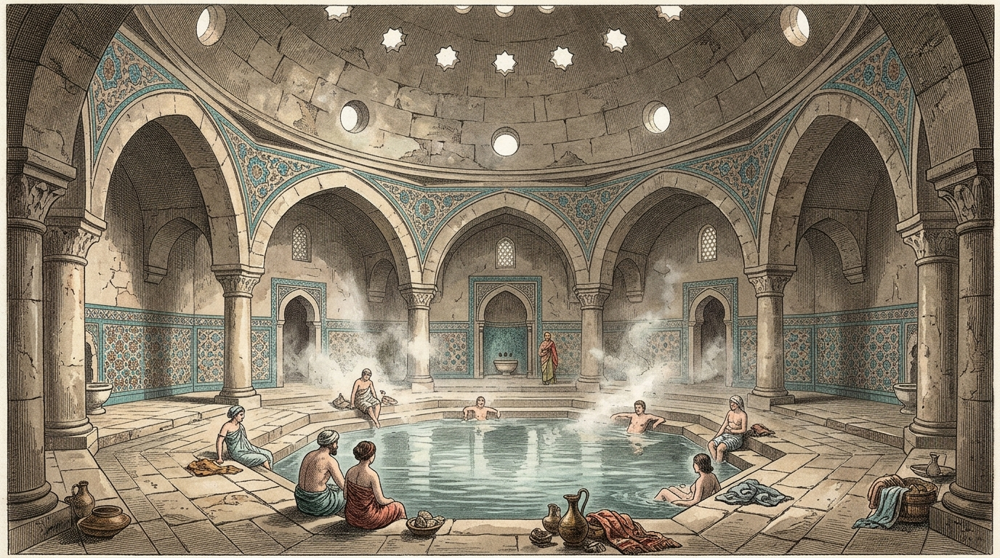
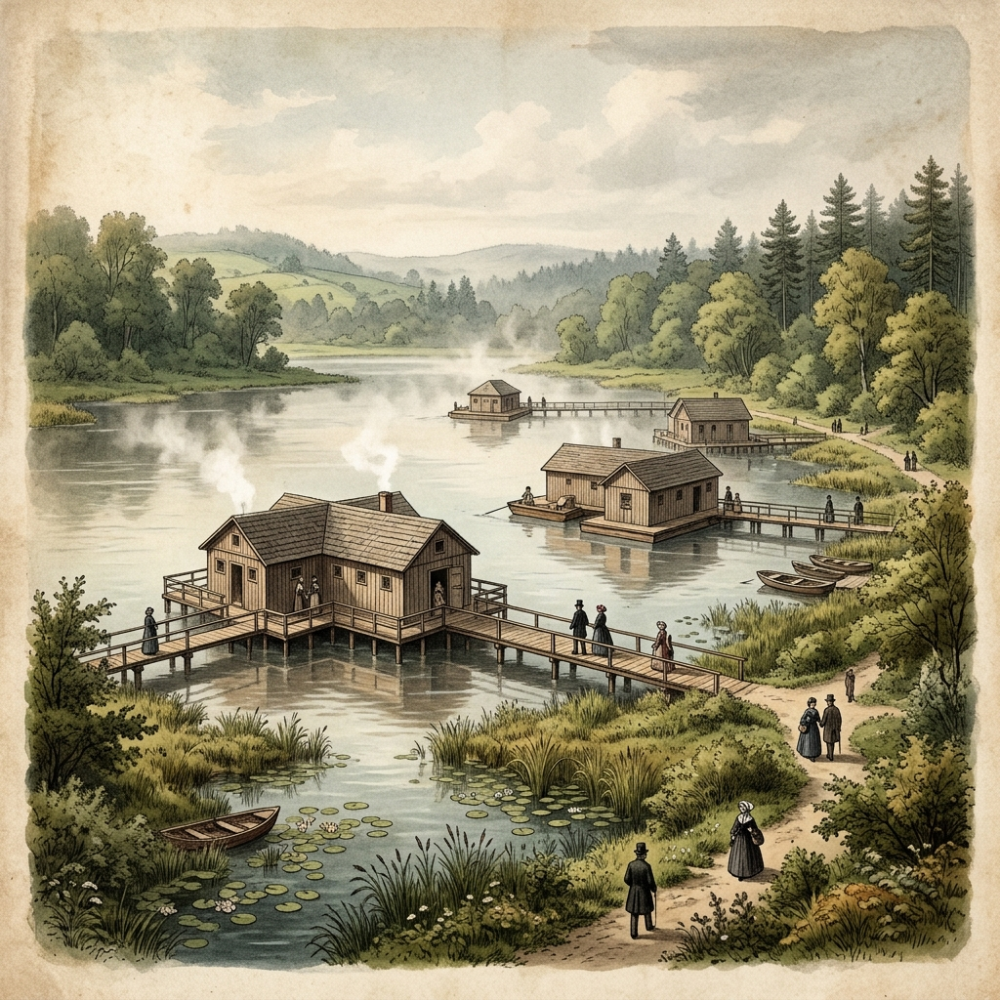
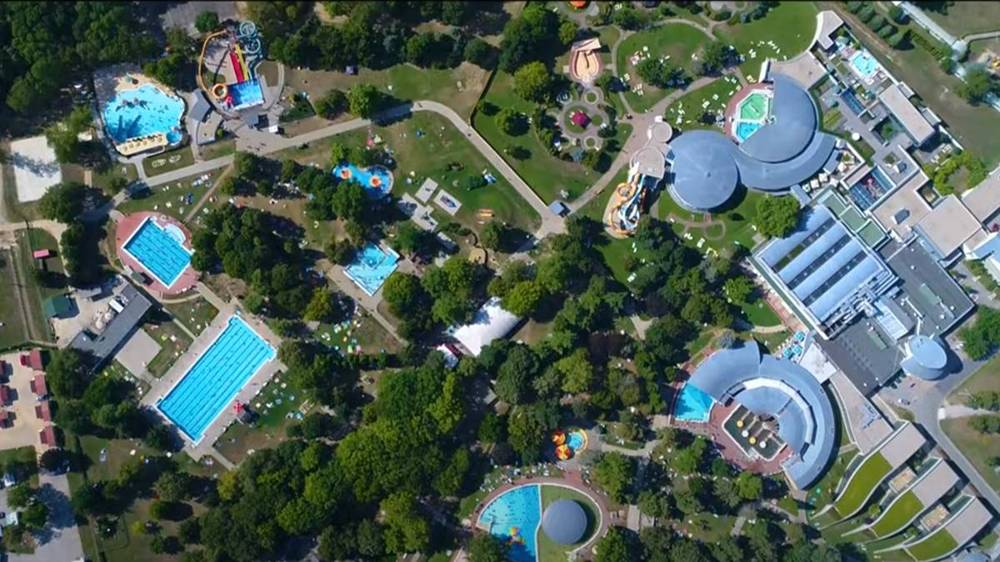
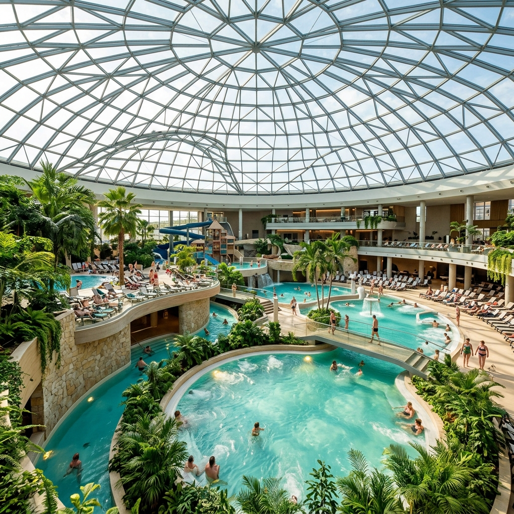
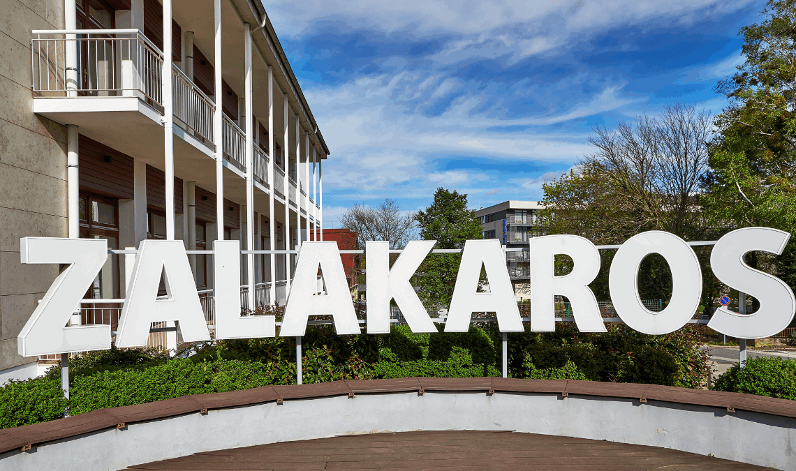

Magyarország világszinten is egyedülálló termálvízkészlettel rendelkezik, amelynek köszönhetően a fürdőkultúra a hazai identitás és a mindennapi élet szerves részévé vált az évszázadok során. A Kárpát-medence különleges geológiai adottságai miatt a földkéreg itt lényegesen vékonyabb, mint a kontinens más területein, így a forró, ásványi anyagokban gazdag vizek sokkal könnyebben törnek utat maguknak a felszín felé. Ez a bőség már a történelem előtti időkben is vonzotta az embert, ám a szervezett és tudatos fürdőélet alapjait az első nagy civilizációk fektették le ezen a tájon. A természet adta kincs kiaknázása folyamatos fejlődést mutatott, és a különböző hódító kultúrák mind hozzáadták a maguk szokásait a helyi hagyományokhoz. Így alakult ki az a sokszínű és gazdag örökség, amely ma is fémjelzi Magyarországot, mint a fürdők világviszonylatban is elismert fellegvárát.
A szervezett magyarországi fürdőkultúra első virágkora a Római Birodalom idejére, Pannónia provincia megalapításának időszakára datálható. A rómaik híresek voltak a víz iránti rajongásukról, és ahol melegvizű forrást találtak, ott azonnal kiépítették a maguk monumentális közfürdőit, a thermákat. Aquincum, a mai Óbuda területe, a birodalom egyik kiemelkedő fürdőközpontjává vált, ahol a katonai és a polgári lakosság egyaránt élvezhette a feltörő források jótékony hatásait. A régészeti ásatások a mai napig tanúskodnak a kifinomult padlófűtési rendszerekről, a mozaikpadlókról és a többmedencés fürdőházakról, amelyek a társasági élet központjaiként is funkcionáltak. A rómaiak nemcsak a tisztálkodás vagy a szórakozás eszközét látták a termálvízben, hanem tudatosan alkalmazták azt különböző betegségek gyógyítására és a katonák rehabilitációjára is.
A középkor átmeneti visszaesése után a következő meghatározó és máig látható mérföldkövet a 16–17. századi török hódoltság időszaka jelentette. Az Oszmán Birodalom hódítói számára a fürdés nem csupán higiéniai kérdés, hanem a muszlim vallási rituálék, a rituális tisztálkodás elengedhetetlen része volt. Budapesten, Egerben és más megszállt városokban csodálatos, kupolás ilidzsákat és kaplidzsákat építettek közvetlenül a meleg forrásokra, amelyek közül több a mai napig működik. Ezek az épületek a keleti építészet remekművei voltak a maguk nyolcszögletű medencéivel, színes mozaikjaival és a misztikus fényt árasztó, lyukacsos kupoláikkal. A törökök meghonisították a gőzfürdőzést és a masszázskultúrát is, amely mély nyomot hagyott a magyar lakosság szokásaiban, és átmentette a fürdők szeretetét a későbbi korokra.
A modern, ma is ismert magyarországi fürdőélet és a tudományos balneoterápia a 19. században, a reformkorban és a Monarchia idején indult igazi virágzásnak. Ekkor fedezték fel újra a vidéki források erejét, és a hazai arisztokrácia körében divattá vált a gyógyfürdők látogatása, ami a társasági élet csomópontjává tette ezeket a helyszíneket. A századfordulón végzett nagyszabású fúrások, mint például Zsigmondy Vilmos munkássága a Városligetben, elképesztő mélységekből hoztak a felszínre addig elérhetetlen, rendkívül forró gyógyvizeket. Erre az időszakra tehető az olyan grandiózus neobarokk és szecessziós paloták felépítése, mint a Széchenyi vagy a Gellért fürdő, amelyek a luxust ötvözték a gyógyászattal. A két világháború között Budapest hivatalosan is elnyerte a „fürdőváros” címet, lefektetve az alapjait annak a modern, wellness- és gyógyturizmusnak, amely ma is milliókat vonz az országba.


Rudas gyógyfürdő - Budapest
Magva a török hódoltság idejéből, az 1560-as évekből származik, amikor Szokoli Musztafa pasa átépíttette. Ikonikus, nyolcszögletű medencéjével és a felette magasodó félgömb alakú török kupolájával a mai napig hűen őrzi az autentikus keleti hangulatot. Az épület az évszázadok során folyamatosan bővült, így ma már a modern wellness elemei is megtalálhatók benne. Legkülönlegesebb része a tetőteraszon kialakított panorámamedence, ahonnan lenyűgöző kilátás nyílik a Dunára és a budapesti hidakra. A fürdő vize radonos gyógyvíz, amely kiválóan alkalmas a mozgásszervi panaszok enyhítésére. A hagyományok megőrzéseként a hét bizonyos napjain továbbra is tartanak kizárólagos férfi, illetve női kötényes fürdőnapokat.
Európa egyik legnagyobb és legimpozánsabb fürdőkomplexuma, amely neobarokk stílusban épült a 20. század elején a Városligetben. Az épület sárga falai és grandiózus kupolái Budapest egyik legfontosabb szimbólumává tették a külföldi turisták körében is. Világhírű a hatalmas szabadtéri, gőzölgő medencéiről, amelyekben a helyi törzsvendégek télen-nyáron sakkoznak a vízben ülve. A medencék ellátásáról Budapest második legmélyebb fúrt kútja gondoskodik, amelyből 74 Celsius-fokos termálvíz tör a felszínre. A komplexum összesen 21 medencével rendelkezik, amelyek között gyógy-, élmény- és úszómedencék egyaránt megtalálhatók. Éjszakai fürdőzései és nyári medencés bulijai, az úgynevezett „Sparty”-k miatt a fiatalabb korosztály körében is rendkívül népszerű.
A történelmi fürdőt Arnaut pasa építtette a 17. század elején a török hódoltság idején, és a mai napig az egyik legértékesebb ilyen jellegű emlékünk. Az épület belső terét egy lenyűgöző, kétszázezer darabból álló aranyozott mozaikkupola fedi, amely misztikus hangulatot áraszt. Különlegessége, hogy a nagymedence alját borító radonos gyógyvíz közvetlenül a lábunk alatt, a kövek között tör fel a mélyből. Ez a fajta radon tartalmú víz gyulladáscsökkentő hatású, és fokozza a szervezet endorphin-termelését is. A török fürdőkultúra alapját képező tradicionális hamam masszázsokat és gőzfürdőket a látogatók a mai napig kipróbálhatják itt. A fürdő közvetlen összeköttetésben áll a szomszédos Egri Termálfürdővel, így a történelmi és a modern élmények könnyen kombinálhatók.

Török fürdő - Eger

Hévízi Tófürdő - Hévíz
Ez a csodálatos természeti képződmény a világ legnagyobb biológiailag aktív, természetes tőzegmedrű gyógytava. A tó vizét egy 38 méter mélyen fekvő forrásbarlang táplálja, amely olyan bőséges, hogy a teljes vízkészlet 72 órán belül teljesen kicserélődik. A víz hőmérséklete télen sem csökken 24 fok alá, így az év minden napján alkalmas a szabadtéri fürdőzésre. Egyedülálló összetételű vize és a tó felett lebegő vastag páraréteg rendkívül hatásos a krónikus mozgásszervi és reumatológiai panaszokra. A víz felszínén úszó pompás indiai vörös tündérrózsák a fürdő védjegyévé váltak, és csodás látványt nyújtanak. A tó környezetében kiépült professzionális kórház és terápiás centrum a balneoterápiás kezelések teljes palettáját kínálja a betegeknek.
A Baranya vármegyei fürdő története közel kétszáz évre nyúlik vissza, amikor az első forrásokat felfedezték a mocsaras területen. Különleges, rendkívül magas kéntartalmú gyógyvízzel büszkélkedhet, amely a világon is ritkaságnak számít a sűrűsége és felszívódási sebessége miatt. A vízben található karbonil-szulfid bizonyítottan kiváló hatású a kopásos ízületi betegségek és a csontritkulás kezelésére. Emellett a harkányi víz a pikkelysömör (psoriasis) tüneteinek enyhítésében is nemzetközileg elismert eredményeket ér el. A hatalmas, ősfás parkban elterülő komplexum nemcsak gyógyulást, hanem nyári strandolási lehetőséget is biztosít. A modern gyógyászati részlegen szakképzett orvosok irányításával zajlanak a szénsavfürdős és iszappakolásos kezelések.
Magyarország második legnagyobb fürdője az osztrák határ közelében fekszik, és az 1950-es években egy olajfúrás során bukkantak a termálvízre. Az itt feltörő víz ásványianyag-tartalma rendkívül magas, literenként meghaladja a 15 000 milligrammot, ami egyedülálló koncentrációt jelent. Főként szénsavas, kalciumos és vasas összetételű, ezért kiválóan alkalmas meszesedések, porckopások és csontritkulás kezelésére. A fürdőben ivókúra formájában is alkalmazzák a vizet, ami krónikus gyomorhurut és emésztési problémák esetén nyújt segítséget. A hatalmas területen elhelyezkedő komplexum több mint harminc medencével és egy modern szaunavilággal várja a vendégeket. A gyógyulni vágyók mellett a rekreációs céllal érkező turisták igényeit is maximálisan kiszolgálja az intézmény.

Bükfürdő - látkép

Aqua-Palace - Hajdúszoboszló
Ez a gigantikus létesítmény büszkén viseli Európa legnagyobb fürdőkomplexuma címet, amely egy valóságos fürdővárost alkot az Alföldön. A hatalmas szabadtéri strandterület mellett egy 15 000 négyzetméteres fedett élményfürdő, az Aqua-Palace várja a családokat az év minden napján. A beltéri részlegen olyan különleges tematikus medencék kaptak helyet, mint a jégbarlang-medence, a mozi-medence vagy a római fürdő. Az adrenalin szerelmeseinek egy extrém csúszdapark áll a rendelkezésére, ahol óriási szabadesés-csúszdák is találhatók. A legkisebbek részére külön bébi- és gyermekvilágot alakítottak ki, ahol biztonságos, sekély vízben játszhatnak. A komplexum méretei és sokszínűsége miatt akár több napot is el lehet tölteni itt unatkozás nélkül.
Közép-Európa egyik legnagyobb fedett vízi élményparkja Budapest északi részén, közvetlenül az M0-s körgyűrű mellett található. A fürdőt egy gigantikus, 72 méter átmérőjű, kupola borítja, amelyet az indonéziai Angkor-romtemplom monumentális építészeti stílusa ihletett. A trópusi hangulatú belső térben 11 hatalmas csúszda található, amelyek összhossza eléri az egy kilométert. A bátrabb látogatók kipróbálhatják a beltéri szörfmedencét, míg a pihenni vágyókat sodrófolyosók és ugrómedencék várják. A szaunabarátok számára egy hatalmas, szaunaszeánszoknak helyet adó exkluzív szaunavilág biztosítja a relaxációt. A fürdőhöz közvetlenül kapcsolódik egy négycsillagos wellness szálloda is, így ideális helyszín családi hétvégékre.
A dél-dunántúli régió egyik legnépszerűbb családi célpontja, amely kifejezetten a többgenerációs pihenésre helyezi a hangsúlyt. A beltéri és kültéri gyermekvilágában több mint hatvanféle vízi attrakció, többek között vízi ágyúk, kötélhidak és kalandmedencék találhatók. A hullámmedence és a fekete lyuk csúszda a nagyobb gyerekek és a felnőttek számára is izgalmas kikapcsolódást nyújt. A családbarát filozófia részeként a pihenőtereket úgy alakították ki, hogy a kisgyermekes szülők kényelmesen tudják ellátni a babákat. Az élményelemek mellett a fürdő rendelkezik saját gyógyvizes szárnnyal is, így a nagyszülők is megtalálják a számukra megfelelő pihenést. Az utóbbi évek fejlesztéseinek köszönhetően egy vadonatúj, prémium szaunavilággal is bővült a komplexum kínálata.

Zalakaros - városkép